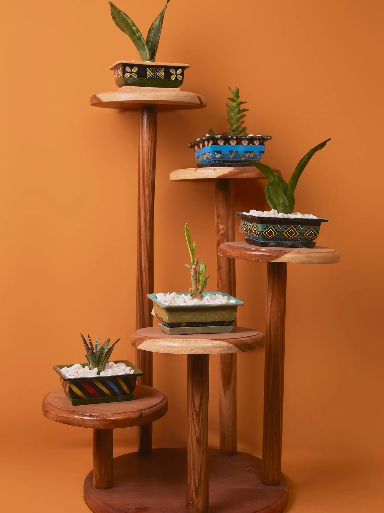
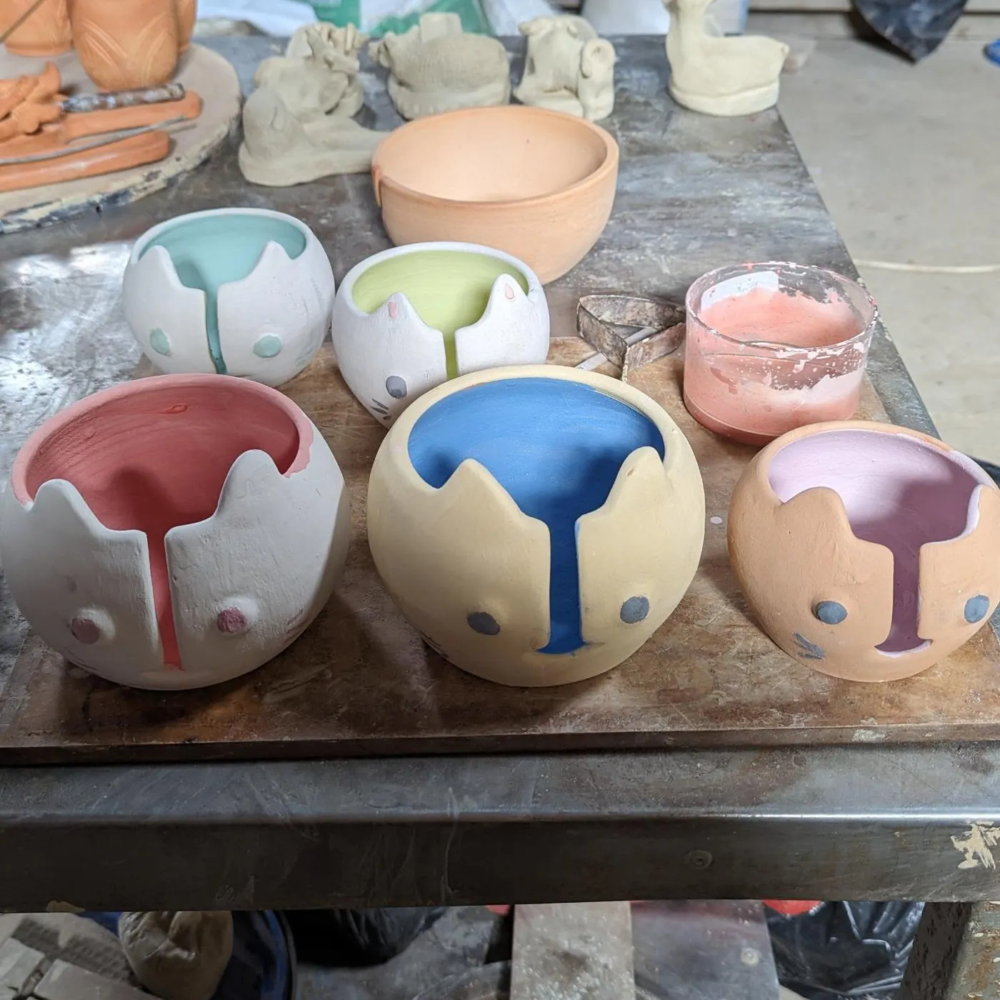
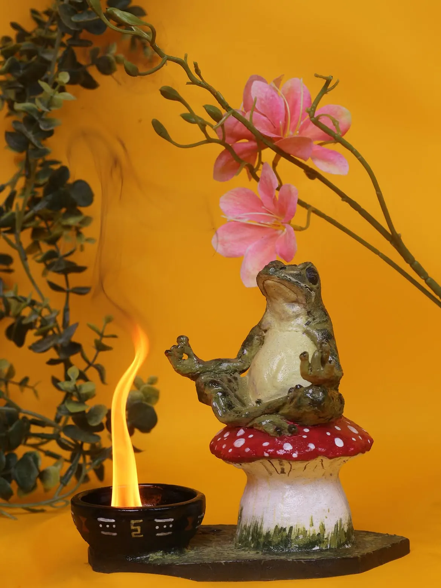

Paint together
Choose pieces from the Wildflower shelves and settle in with a palette.
Some afternoons are better shared. Bring your favourite people for painting, making, food and all the conversations in between.
Plan a gathering
make it a dayPottery painting is made for easy catch-ups, solo dates and soft afternoons with friends. Choose your pieces, spread out the paints and make room for snacks and drinks.
For special occasions, please enquire in advance so the team can help you plan your visit.
See pottery painting
make memories, tooChoose the creative experience that fits your group, then add time around the café table.
Choose pieces from the Wildflower shelves and settle in with a palette.
Book guided wheel throwing for a shared first spin.
Make time for a meal, a coffee or one more round.

The fun doesn't end when the brushes go down. Your painted pottery is glazed and fired, then ready to collect once the kiln has done its work.
See how painting worksFor groups and special occasions, contact Casa Luano in advance about the day you have in mind.
Find us on Instagram